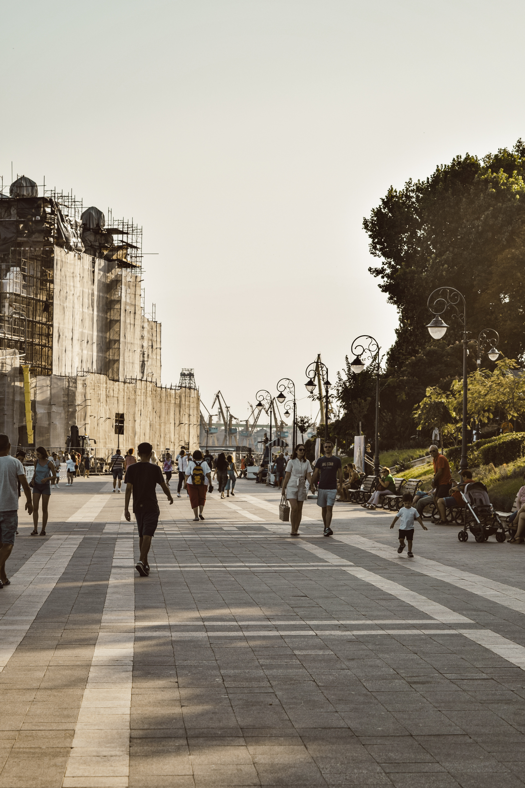
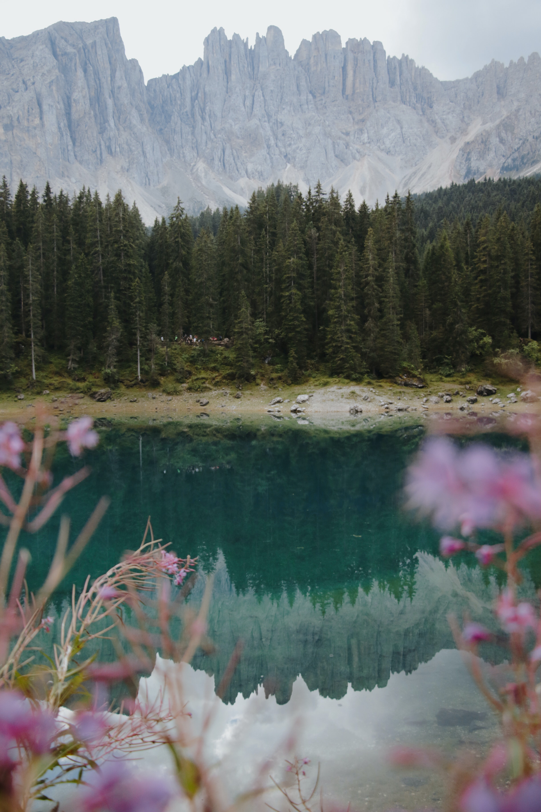
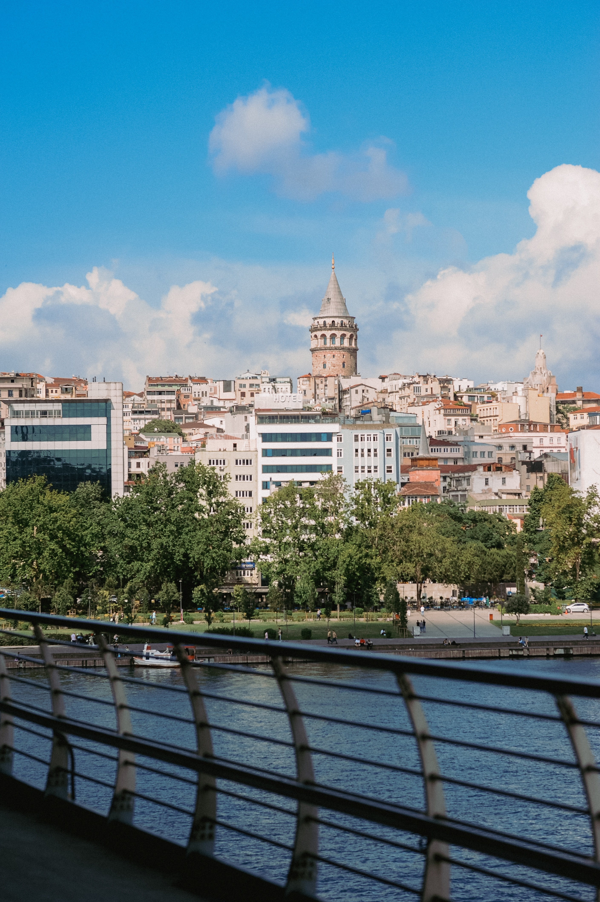

New York City Parks
  
| NYC Park Department of Parks & Recreation Events | |||
|---|---|---|---|
| January | Open Access Tennis | Fitness Room Open Access | Cardio and Fitness Training |
| Feburary | Games Galore | Adult Open Play Basketball | Fitness Room |
| March | Learn to Play Soccer | Chair Aerobics | Yoga |